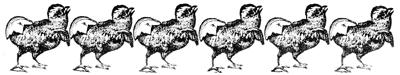
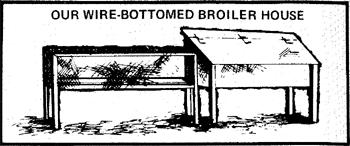
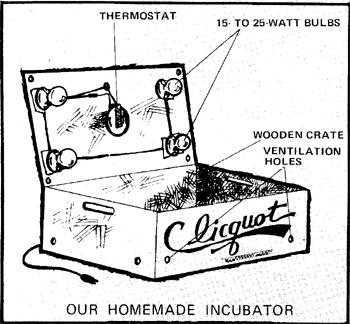
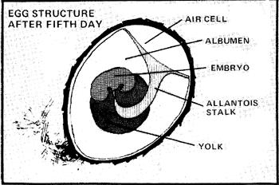
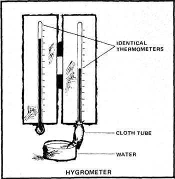
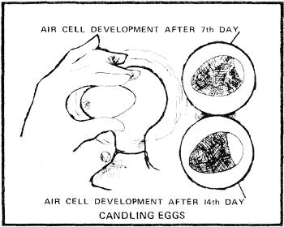
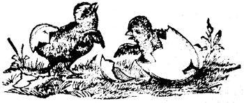

Our start with chick tiny flock of ten pullets and a cockerel, obtained from a hatchery. The day-old chicks were carefully tended, kept warm and protected from drafts by a homemade brooder-a cardboard carton heated with a light bulb-in our empty guestroom for a few weeks. By the second week the babies' wings had developed and we discovered them flying around the room and alighting on various objects. We clipped their wingtips at that point, constructed a broiler house from miscellaneous scraps of wood and wire and-when they were sufficiently grown moved our birds to their outdoor quarters. Five months later we discovered our first egg, and gathered the fresh, fertile layings faithfully each day for many months afterward. By the end of each week during that period, always had at least a dozen extra for sale or gifts to friends. Meanwhile, meat prices were rising steadily and we began to consider keeping more chickens for slaughter. Then spring rolled around again, our neighbors began ordering new chicks from the hatchery and we discovered that the cost of day. old biddies had doubled in our area. That's when we decided to try hatching our own fertile eggs.
Finally, after much searching, we turned up some help an several old, worn volumes. The rest of the information in this, article we learned for ourselves by building and operating our own incubator.
An incubators is a device that provides controlled conditions for the hatching of eggs. There are three basic types:
STILL-AIR. Still-air incubators are warmed by uncirculated radiant heat, and the placement of the eggs in relation to the heat source is critical. It's also just as important to locate the thermometer correctly. A wrongly positioned instrument will be inaccurate by several degrees enough to cause the failure of the hatch or the death of any chicks that do emerge The air must be flushed thoroughly from the apparatus at least four times a day (when the eggs are turned), to release the noxious gases that accumulate in the closed box.
CONVECTION. This type of incubator has ventilation holes in the top and bottom to provide a continuous flow of fresh air and an even distribution of beat. The upward draft in the chamber causes fresh air to be drawn in at the base of the device. It's then warmed by radiation and circulated around the interior. Placement of the eggs and the thermometer are thus much less crucial than in the still-air machine. The disadvantage of this method is the higher rate of evaporation created by the air currents. This means that relative humidity must be maintained by the use of evaporation trays and carefully monitored with a device called a hygrometer.
FORCED-AIR. Incubators of this type are also vented, but air and heat are circulated with a fan instead of by convection. Again, care must be taken to maintain proper humidity.
OUR HOMEMADE INCUBATOR
The mini-hatchery we built to increase our flock is of the convection type. It was inexpensive to construct, isn't at all elaborate and-while far from ideal-gives good results with careful attention and maintenance. First-because accurate temperature control is vital-we ordered an electric thermostat switch from Sears (check for such items in farm supply catalogs). This was our only piece of store-bought equipment. While we waited for the thermostat to arrive, we lugged down from the attic a deep wooden packing case that had contained bottles of a one-time popular soda beverage called Clicquot ("pronounced Klee-Ko," we were told by the lettering on the box). We cut a lid to fit from scrap lumber and lined both the antique crate and its cover with heavy-duty aluminum foil to provide reflection of internal heat. An aluminum pie plate was placed on the floor to serve as an evaporator tray. Then we took two screens of half-inch wire mesh and fitted them on a ledge of 1 X 2's laid on edge at the incubator's bottom. Our heat source was four small 15-watt light bulbs (any size up to 25 watts would do), one placed near each corner of the lid and connected to the thermostat installed in the center. We hinged the cover and drilled one half-inch ventilation hole in each of its corners also two quarter-inch holes in each side of the box, about an inch above the level where the tops of the eggs would be. Our incubator was complete. From that time on, our success in hatching chicks would depend on how we handled the eggs before and during their three weeks of development.
HANDLE WITH CARE!
The incubation of chicks requires care, patience and, of course, good fertile eggs to start with. In fact, the success of the hatch really begins with your flock's nutrition and the health and management of your breeders. Hatching eggs must contain certain elements in the proper quantities to produce vigorous chicks, and they must have good strong shells to be able to support live embryos.M/p>
The only way to tell whether an egg is alive is by incubation. The chances are improved, however, by a correct proportion of males to females in your colony. One rooster can tread from 30 to 50 hens, and each member of the harem should be serviced at least once a week to ensure fertility of her eggs. This fertility, however, may be impaired by too frequent coatings and excessive inbreeding may affect the growth and quality of your chicks. Gather eggs for incubation at least once a day, and try to choose those that are large and well-formed. Check them carefully for cracks (you can always eat the rejects). Since eggshells "breathe" through pores that allow oxygen to enter and waste gases to escape, you should wear clean cotton gloves-or make sure your hands are well scrubbed-to avoid clogging the openings with oil or grease. New-laid eggs are covered with natural protective coating and should never be washed. We do. however, date each of our gatherings with a non-toxic pen anal mark the other side with a circle to help us keep track of is, position when we turn it in the incubator. If you plan to keep the eggs awhile before incubation, handle them as little as possible and cool them slowly in a well ventilated place. Then move them to a storage area with a temperature of 55° to 65° F and a relative humidity of 70 to, 80 percent. Turn the eggs once a day. The longer you hold your hen fruit, the less fertile it will become. The decline sets in by the sixth or seventh day and is complete by the tenth or twelfth. We prefer to use fresh layings as much as possible.
When you're ready to incubate eggs that have been stored. remove them from the cooler and let them remain at room temperature for three to four hours. If you place cool eggs in the chamber with others that are already warm, the temperature of the latter will be reduced and their growth retarded.
In warm weather there's a possibility that the eggs you gather may already have germinated and will be injured by cooling. At such times we've moved ours directly from the nest to the incubator until its capacity (50) was reached each egg should be positioned correctly in the hatchery. As, the embryo inside develops, the chick's head will move to the highest point and-by the 12th or 14th day-the baby will have turned lengthwise in the shell and its further growth will prevent it from moving again. This makes it important for the large end of the egg where an air cell forms-to be placed UP Then, at hatching time-about the 20th day-when the chick is ready to break through the amnion membrane into the air cell for its first breath, it will be able to do so.
A brooding hen will turn her eggs frequently, and for a good reason: the embryos inside must have exercise to develop properly. If an egg remains in one position for too long, certain tissues will be strained and others underworked with resulting poor development or even. malformation or deformity. Rotating each egg while keeping its large end up-should be done at intervals of no more than eight hours. We do this four times a day, and at the same time check on the essential factors of heat, humidity and ventilation.
HEAT
A chicken embryo can grow and develop only within a narrow range of temperature: from 99° to 105°. At 40° to 60°, life remains dormant. At 80° to 900 the germ will begin to grow but will soon spoil. Above 110° the embryo dies.
Too much heat will cause the eggs to crack open prematurely. Too little means a late hatch. If the temperature is excessive when the chick emerges, its down will be too dry and will stick to the shell. At that time, also, the young bird will still be attached to the yolk (which is absorbed into its body after it breaks out of the shell and supplies nourishment for the first two days of life). Overheating may damage this essential store of food, or prevent it from passing through the fine ducts into the chick's intestines in which case death will result in a few days. For all these reasons, temperature control is the most vital part of incubation.
Careful supervision of our thermostat-and-light-bulbs system enabled us to keep the temperature of our mini-hatchery within the proper range. Monitoring an incubator, however, is a trickier job than you might think because several factors placement of the thermometer, distribution of heat and amount of ventilation--all affect the measurement of warmth.
Since warm air rises, you can take the temperature of an egg at three points and get three different readings which should average about 100°. That is, if the lower end is at 97°, the upper end should be at 103°. If the bottom measurement is 100°, the top should be too, The figures should remain constant and steady. An excess of heat during one period won't make up for a deficiency at another.
HUMIDITY
The correct level of humidity is especially important early in incubation, when the air cell is being formed by the evaporation of water through the shell. Too much or too little moisture in the surrounding air will cause the space to be too large or too small, and the chick will die during the last three days of growth or while hatching even if all other conditions have been perfectly maintained.
The relative humidity inside the incubator should be 65 or 70 percent. It must be carefully watched because the rate of evaporation from the water pan is affected by many factors altitude, weather conditions, temperature and air circulation and is quite variable. If the level of moisture in the air falls too low at a given time, you may need to provide more humidity by placing damp rags or sponges inside and around the container.
Relative humidity is measured by a hygrometer. You can purchase one at a hardware store or make your own from two identical thermometers with exposed bulbs. Mount both instruments on a piece of wood at the level of the eggs' midlines, so that the bulbs overhang. Sew a strip of cloth approximately an inch wide and three inches long into a tube, turn it inside out and tie one end over the bulb of one of the thermometers. Submerge the other end of the fabric in a small vial or other container of water. When the bare thermometer registers 100° (the correct incubator temperature measured at the center of the egg) the dampened instrument should read 7° to 11 ° lower.
VENTILATION
An incubating egg requires oxygen to live and develop, and it produces carbon dioxide and several poisonous gases. Therefore, good circulation and ventilation are essential in the On the other hand, excessive drafts will cause changes in the eggs' temperature and too much evaporation of moisture so there's no need to overdo it. A proper schedule of opening the incubator to turn the eggs frequently allows - all the change of air that is needed.
HATCHING
By the 12th or 14th day of incubation we could actually. see the formation of the air cell by holding an egg before o strong light (this operation is called "candling"). On the 20th day, we got anxious about our first batch and picked them up to try to determine whether they were indeed alive. We held them against our ears and sure enough!-there were the chick, inside, picking at the shells and cheeping. Like children
Christmas, we couldn't wait to open our presents so with helped the process along by breaking through the tops of the eggs. This may not be advisable but we didn't lose any babies (All authorities know of recommend letting the young bird find their own way out. "A chick that has not strength enough to work its way out of the shell will not be worth anything after it gets out; while attempts to assist it are likely to do more harm than good, by prematurely rupturing the blocs vessels of the allantois, which corresponds in this respect to the afterbirth in animals, and this may cause the chick to bleed to death," says CF Thorne in The Complete Poultry Boot, 1886. -MOTHER )
When a chick hatches, its head-as we've already mentioned-must be directed toward the air cell inside the egg. Its first real voluntary action will be to push its beak into this space to receive the first breath of life. The broken amnion membrane next slips around the young bird and frees the yolk, which remains attached to the chick. The prisoner then begins to break the hard outer wall with its beak, turning counterclockwise within the air cell, until it has broken off a cap of shell through which it emerges. This event is called "pipping".
The newly emerged chick is covered with albumen and blood, and is wet, ugly and still attached to the yolk. As the young bird breathes, its body will expand and draw in the food supply by means of the muscles in the yolk sac wall. Clear away the shell debris if you like, but leave the chick in the incubator until the yolk is absorbed and the down begins to dry. We keep clean water (containing a few drops of cider vinegar) available for the new arrivals and dip their beaks into it to teach them to drink. After five or six hours the chicks get nice and fluffy and we remove them to the brooder box.
We found hatching our own chicks very exciting and rewarding worth all the time and attention we put into it. Although a hatch of about 60 percent is considered reasonably good, either our method or our luck has given us 100 percent success with all the fertile eggs we've tried. We're looking forward to a lot of chicken dinners.
INCUBATION OF OTHER FOWL
Birds other than chickens can be successfully hatched in an incubator. Our unit now contains some duck eggs, and we plan to try geese and quail. The principles are the same but each species has its own incubation time: Chickens . . . . . . . . . .... . . . . . . . . . . . . 21 days
Ducks ..... . . . . . . . . ... . . . .. . . . . . . . . 28 days
Geese . ... . . . . . . . . ... . . . . . . . . . . 30-33 days
Turkeys . . . . . . . . ... ... . . . . . . . . . . 28-30 days
Partridges. . . . . . ... ... . . . . . . . . . . . 22-23 days
Bobwhite quail . ... . . ..... . . . . . . . . . . . . 23 days
|
 |
 |
 |
|
 |
 |
 |
|
 |
|
|